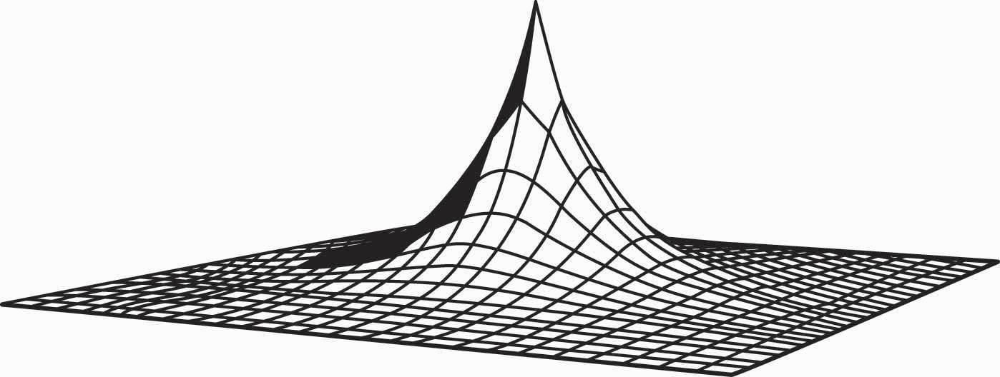

In this chapter, we apply some of the analysis of the previous chapter to specific problems like the supply of labor, real estate, search, and risk.
Consider a taxi driver who owns a car, a convenience store owner, or anyone else who can set his or her own hours. Working has two effects on this consumer: more goods consumption but less leisure consumption. To model this, we let x be the goods consumption, L the amount of nonwork time or leisure, and working time T – L, where T is the amount of time available for activities of all kinds. The variable L includes a lot of activities that aren’t necessarily fun—like trips to the dentist, haircuts, and sleeping—but for which the consumer isn’t paid and which represent choices. One could argue that sleeping isn’t really a choice, in the sense that one can’t choose zero sleep; but this can be handled by adjusting T to represent “time available for chosen behavior” so that T – L is work time and L is chosen nonwork activities. We set L to be leisure rather than labor supply because it is leisure that is the good thing, whereas most of us view working as something that we are willing to do provided we’re paid for it.
Labor supply is different from other consumption because the wage enters the budget constraint twice: first as the price of leisure, and second as income from working. One way of expressing this is to write the consumer’s budget constraint as px + wL = M + wT.
Here, M represents nonwork income, such as gifts, government transfers, and interest income. We drop the subscript on the price of X and use w as the wage. Finally, we use a capital L for leisure because a lowercase L looks like the number one. The somewhat Dickensian idea is that the consumer’s maximal budget entails working the total available hours T, and any nonworked hours are purchased at the wage rate w. Alternatively, one could express the budget constraint so as to reflect that expenditures on goods px equal the total money, which is the sum of nonwork income M and work income w(T – L), or px = M + w(T – L).
These two formulations of the budget constraint are mathematically equivalent.
The strategy for solving the problem is also equivalent to the standard formulation, although there is some expositional clarity used by employing the budget constraint to eliminate x. That is, we write the utility u(x, L) as
As before, we obtain the first-order condition where the partial derivatives u1 and u2 are evaluated at Note that the first-order condition is the same as the standard two-good theory developed already. This is because the effect, so far, is merely to require two components to income: M and wT, both of which are constant. It is only when we evaluate the effect of a wage increase that we see a difference.
To evaluate the effect of a wage increase, differentiate the first-order condition to obtain
Since by the standard second-order condition, if and only if that is, these expressions are equivalent to one another. Simplifying the latter, we obtain
Since the logarithm is increasing, this is equivalent to being an increasing function of L. That is, L rises with an increase in wages and a decrease in hours worked if the marginal utility of goods times the hours worked is an increasing function of L, holding constant everything else, but evaluated at the optimal values. The value u1 is the marginal value of an additional good, while the value T – L represents the hours worked. Thus, in particular, if goods and leisure are substitutes, so that an increase in L decreases the marginal value of goods, then an increase in wages must decrease leisure, and labor supply increases in wages. The case where the goods are complements holds a hope for a decreasing labor supply, so we consider first the extreme case of complements.
Example (Perfect complements): u(x, L) = min {x, L}.In this case, the consumer will make consumption and leisure equal to maximize the utility, so or
Thus, L is increasing in the wages if pT > M; that is, if M is sufficiently small so that one can’t buy all of one’s needs and not work at all. (This is the only reasonable case for this utility function.) With strong complements between goods and leisure, an increase in wages induces fewer hours worked.
Example (Cobb-Douglas):
The first-order condition gives or
If M is high enough, the consumer doesn’t work but takes L = T; otherwise, the equation gives the leisure, and labor supply is given by
Labor supply increases with the wage, no matter how high the wage goes.
The wage affects not just the price of leisure but also the income level. This makes it possible for the income effect of a wage increase to dominate the substitution effect. Moreover, we saw that this is more likely when the consumption of goods takes time; that is, the goods and leisure are complements.
Figure 13.1 Hours per week

As a practical matter, for most developed nations, increases in wages are associated with fewer hours worked. The average workweek prior to 1950 was 55 hours, which fell to 40 hours by the mid-1950s. The workweek has gradually declined since then, as Figure 13.1 "Hours per week" illustrates.
A number of physicists have changed careers to become researchers in finance or financial economics. Research in finance pays substantially better than research in physics, and yet requires many of the same mathematical skills like stochastic calculus. Physicists who see their former colleagues driving Porsches and buying summerhouses are understandably annoyed that research in finance—which is intellectually no more difficult or challenging than physics—pays so much better. Indeed, some physicists are saying that other fields—such as finance, economics, and law—“shouldn’t” pay more than physics.
The difference in income between physics’ researchers and finance researchers is an example of a compensating differentialIncome or costs that equalize different choices.. A compensating differential is income or costs that equalize different choices. There are individuals who could become either physicists or finance researchers. At equal income, too many choose physics and too few choose finance, in the sense that there is a surplus of physicists and a shortage of finance researchers. Finance salaries must exceed physics’ salaries in order to induce some of the researchers who are capable of doing either one to switch to finance, which compensates those individuals for doing the less desirable task.
Jobs that are dangerous or unpleasant must pay more than jobs requiring similar skills but without the bad attributes. Thus, oil-field workers in Alaska’s North Slope, well above the Arctic Circle, earn a premium over workers in similar jobs in Houston, Texas. The premium—or differential pay—must be such that the marginal worker is indifferent between the two choices: The extra pay compensates the worker for the adverse working conditions. This is why it is known in economics’ jargon by the phrase of a compensating differential.
The high salaries earned by professional basketball players are not compensating differentials. These salaries are not created because of a need to induce tall people to choose basketball over alternative jobs like painting ceilings, but instead are payments that reflect the rarity of the skills and abilities involved. Compensating differentials are determined by alternatives, not by direct scarcity. Professional basketball players are well paid for the same reason that Picasso’s paintings are expensive: There aren’t very many of them relative to demand.
A compensating differential is a feature of other choices as well as career choices. For example, many people would like to live in California for its weather and scenic beauty. Given the desirability of California over, for example, Lincoln, Nebraska, or Rochester, New York, there must be a compensating differential for living in Rochester; and two significant ones are air quality and housing prices. Air quality worsens as populations rise, thus tending to create a compensating differential. In addition, the increase in housing prices also tends to compensate—housing is inexpensive in Rochester, at least compared with California.There are other compensations, besides housing, for living in Rochester—cross-country skiing and proximity to mountains and lakes, for example. Generally, employment is only a temporary factor that might compensate, because employment tends to be mobile, too, and move to the location that the workers prefer, when possible. It is not possible on Alaska’s North Slope.
Housing prices also compensate for location within a city. For most people, it is more convenient—both in commuting time and for services—to be located near the central business district than in the outlying suburbs. The main compensating differentials are school quality, crime rates, and housing prices. We illustrate the ideas with a simple model of a city in the next section.
An important point to understand is that the good, in limited supply in cities, is not a physical structure like a house, but the land on which the house sits. The cost of building a house in Los Angeles is quite similar to the cost of building a house in Rochester, New York. The big difference is the price of land. A $1 million house in Los Angeles might be a $400,000 house sitting on a $600,000 parcel of land. The same house in Rochester might be $500,000—a $400,000 house on a $100,000 parcel of land.
Usually, land is what fluctuates in value rather than the price of the house that sits on the land. When a newspaper reports that house prices rose, in fact what rose were land prices, for the price of housing has changed only at a slow pace, reflecting increased wages of house builders and changes in the price of lumber and other inputs. These do change, but historically the changes have been small compared to the price of land.
We can construct a simple model of a city to illustrate the determination of land prices. Suppose the city is constructed on a flat plane. People work at the origin (0, 0). This simplifying assumption is intended to capture the fact that a relatively small, central portion of most cities involves business, with a large area given over to housing. The assumption is extreme, but not unreasonable as a description of some cities.
Suppose commuting times are proportional to distance from the origin. Let c(t) be the cost to the person of a commute of time t, and let the time taken be t = λr, where r is the distance. The function c should reflect both the transportation costs and the value of time lost. The parameter λ accounts for the inverse of the speed in commuting, with a higher λ indicating slower commuting. In addition, we assume that people occupy a constant amount of land. This assumption is clearly wrong empirically, and we will consider making house size a choice variable later.
A person choosing a house priced at p(r), at distance r, thus pays c(λr) + p(r) for the combination of housing and transportation. People will choose the lowest cost alternative. If people have identical preferences about housing and commuting, then house prices p will depend on distance and will be determined by c(λr) + p(r) equal to a constant, so that people are indifferent to the distance from the city’s center—decreased commute time is exactly compensated by increased house prices.
The remaining piece of the model is to figure out the constant. To do this, we need to figure out the area of the city. If the total population is N, and people occupy an area of one per person, then the city size rmax satisfies and thus
At the edge of the city, the value of land is given by some other use, like agriculture. From the perspective of the determinant of the city’s prices, this value is approximately constant. As the city takes more land, the change in agricultural land is a very small portion of the total land used for agriculture. Let the value of agricultural land be v per housing unit size. Then the price of housing is p(rmax) = v, because this is the value of land at the edge of the city. This lets us compute the price of all housing in the city:
or
This equation produces housing prices like those illustrated in Figure 13.2 "House price gradient", where the peak is the city’s center. The height of the figure indicates the price of housing.
Figure 13.2 House price gradient
It is straightforward to verify that house prices increase in the population N and the commuting time parameter λ, as one would expect. To quantify the predictions, we consider a city with a population of 1,000,000; a population density of 10,000 per square mile; and an agricultural use value of $6 million per square mile. To translate these assumptions into the model’s structure, first note that a population density of 10,000 per square mile creates a fictitious “unit of measure” of about 52.8 feet, which we’ll call a purlong, so that there is one person per square purlong (2,788 square feet). Then the agricultural value of a property is v = $600 per square purlong. Note that this density requires a city of radius rmax equal to 564 purlongs, which is 5.64 miles.
The only remaining structure left to identify in the model is the commuting cost c. To simplify the calculations, let c be linear. Suppose that the daily cost of commuting is $2 per mile (roundtrip), so that the present value of daily commuting costs in perpetuity is about $10,000 per mile.This amount is based upon 250 working days per year, for an annual cost of about $500 per mile, yielding a present value at 5% interest of $10,000. See Section 11.1 "Present Value". With a time value of $25 per hour and an average speed of 40 mph (1.5 minutes per mile), the time cost is 62.5 cents per minute. Automobile costs (such as gasoline, car depreciation, and insurance) are about 35–40 cents per mile. Thus the total is around $1 per mile, which doubles with roundtrips. This translates into a cost of commuting of $100 per purlong. Thus, we obtain
Thus, the same 2,788-square-foot property at the city’s edge sells for $600 versus $57,000, less than six miles away at the city’s center. With reasonable parameters, this model readily creates dramatic differences in land prices, based purely on commuting time.
As constructed, a quadrupling of population approximately doubles the price of land in the central city. This probably understates the change, since a doubling of the population would likely increase road congestion, increasing λ and further increasing the price of central city real estate.
As presented, the model contains three major unrealistic assumptions. First, everyone lives on an identically sized piece of land. In fact, however, the amount of land used tends to fall as prices rise. At $53 per square foot, most of us buy a lot less land than at 20 cents per square foot. As a practical matter, the reduction of land per capita is accomplished both through smaller housing units and through taller buildings, which produce more housing floor space per acre of land. Second, people have distinct preferences and the disutility of commuting, as well as the value of increased space, varies with the individual. Third, congestion levels are generally endogenous—the more people who live between two points, the greater the traffic density and, consequently, the higher the level of λ. Problems arise with the first two assumptions because of the simplistic nature of consumer preferences embedded in the model, while the third assumption presents an equilibrium issue requiring consideration of transportation choices.
This model can readily be extended to incorporate different types of people, different housing sizes, and endogenous congestion. To illustrate such generalizations, consider making the housing size endogenous. Suppose preferences are represented by the utility function where H is the house size that the person chooses, and r is the distance that he or she chooses. This adaptation of the model reflects two issues. First, the transport cost has been set to be linear in distance for simplicity. Second, the marginal value of housing decreases in the house size, but the value of housing doesn’t depend on distance from the center. For these preferences to make sense, α < 1 (otherwise either zero or an infinite house size emerges). A person with these preferences would optimally choose a house size of resulting in utility Utility at every location is constant, so
A valuable attribute of the form of the equation for p is that the general form depends on the equilibrium values only through the single number u*. This functional form produces the same qualitative shapes as shown in Figure 13.2 "House price gradient". Using the form, we can solve for the housing size H:
The space in the interval [r, r + Δ] is π(2rΔ + Δ2). In this interval, there are approximately people. Thus, the number of people within rmax of the city’s center is
This equation, when combined with the value of land on the periphery jointly determines rmax and u*.
When different people have different preferences, the people with the highest disutility of commuting will tend to live closer to the city’s center. These tend to be people with the highest wages, since one of the costs of commuting is time that could have been spent working.
The consumption of goods doesn’t take place in a single instance, but over time. How does time enter into choice? We’re going to simplify the problem a bit and focus only on consumption, setting aside working for the time being. Let x1 be consumption in the first period and x2 in the second period. Suppose the value of consumption is the same in each period, so that u(x1, x2) = v(x1) + δv(x2), where δ is called the rate of “pure” time preference. The consumer is expected to have income M1 in the first period and M2 in the second. There is a market for lending and borrowing, which we assume has a common interest rate r.
The consumer’s budget constraint, then, can be written (1 + r)(M1 – x1) = x2 – M2.
This equation says that the net savings in Period 1, plus the interest on the net savings in Period 1, equals the net expenditures in Period 2. This is because whatever is saved in Period 1 earns interest and can then be spent in Period 2; alternatively, whatever is borrowed in Period 1 must be paid back with interest in Period 2. Rewriting the constraint: (1 + r)x1 + x2 = (1 + r)M1 + M2.
This equation is known as the intertemporal budget constraintThe budget constraint that allows for borrowing or lending.—that is, the budget constraint that allows for borrowing or lending. It has two immediate consequences. First, 1 + r is the price of Period 2 consumption in terms of Period 1 consumption. Thus, the interest rate gives the relative prices. Second, the relevant income is the permanent incomeThe present value of the income stream., which is the present value of the income stream. Clearly a change in income that leaves the present value of income the same should have no effect on the choice of consumption.
Once again, as with the labor supply, a change in the interest rate affects not just the price of consumption but also the budget for consumption. In other words, an increase in the interest rate represents an increase in budget for net savers but a decrease in budget for net borrowers.
As always, we rewrite the optimization problem to eliminate one of the variables, to obtain
Thus, the first-order conditions yield
This condition says that the marginal value of consumption in Period 1, equals the marginal value of consumption in Period 2, times the interest factor. That is, the marginal present values are equated. Note that the consumer’s private time preference, δ, need not be related to the interest rate. If the consumer values Period 1 consumption more than does the market, so that δ(1 + r) < 1, then that is, the consumer consumes more in Period 1 than in Period 2.As usual, we are assuming that utility is concave, which in this instance means that the second derivative of v is negative, and thus the derivative of v is decreasing. In addition, to ensure an interior solution, it is useful to require what are called the Inada conditions: and Similarly, if the consumer’s discount of future consumption is exactly equal to the market discount, δ(1 + r) = 1, the consumer will consume the same amount in both periods. Finally, if the consumer values Period 1 consumption less than the market, δ(1 + r) > 1, the consumer will consume more in Period 2. In this case, the consumer is more patient than the market.
Figure 13.3 Borrowing and lending

Whether the consumer is a net lender or borrower depends not just on the preference for earlier versus later consumption but also on incomes. This is illustrated in Figure 13.3 "Borrowing and lending". In this figure, the consumer’s income mostly comes in the second period. As a consequence, the consumer borrows in the first period and repays in the second period.
The effect of an interest rate increase is to pivot the budget constraint around the point (M1, M2). Note that this point is always feasible—that is, it is feasible to consume one’s own endowment. The effect of an increase in the interest rate is going to depend on whether the consumer is a borrower or a lender. As Figure 13.4 "Interest rate change" illustrates, the net borrower borrows less in the first period—the price of first-period consumption has risen and the borrower’s wealth has fallen. It is not clear whether the borrower consumes less in the second period because the price of second-period consumption has fallen, even though wealth has fallen, too—two conflicting effects.
An increase in interest rates is a benefit to a net lender. The lender has more income, and the price of Period 2 consumption has fallen. Thus the lender must consume more in the second period, but only consumes more in the first period (lends less) if the income effect outweighs the substitution effect. This is illustrated in Figure 13.5 "Interest rate increase on lenders".
Figure 13.4 Interest rate change

Figure 13.5 Interest rate increase on lenders

The government, from time to time, will rebate a portion of taxes to “stimulate” the economy. An important aspect of the outcome of such a tax rebate is the effect to which consumers will spend the rebate, versus save the rebate, because the stimulative effects of spending are thought to be larger than the stimulative effects of saving.This belief shouldn’t be accepted as necessarily true; it was based on a model that has since been widely rejected by the majority of economists. The general idea is that spending creates demand for goods, thus encouraging business investment in production. However, saving encourages investment by producing spendable funds, so it isn’t at all obvious whether spending or saving has a larger effect. The theory suggests how people will react to a “one-time” or transitory tax rebate, compared to a permanent lowering of taxes. In particular, the budget constraint for the consumer spreads lifetime income over the lifetime. Thus, for an average consumer who might spend a present value of $750,000 over a lifetime, a $1,000 rebate is small potatoes. On the other hand, a $1,000 per year reduction is worth $20,000 or so over the lifetime, which should have 20 times the effect of the transitory change on the current expenditure.
Tax rebates are not the only way that we receive one-time payments. Money can be found, or lost, and we can have unexpected costs or windfall gifts. From an intertemporal budget constraint perspective, these transitory effects have little significance; and thus the theory suggests that people shouldn’t spend much of a windfall gain in the current year, or cut back significantly when they have a moderately sized, unexpected cost.
As a practical matter, most individuals can’t borrow at the same rate at which they lend. Many students borrow on credit cards at very high interest rates and obtain a fraction of that in interest on savings. That is to say, borrowers and lenders face different interest rates. This situation is readily identified in Figure 13.6 "Different rates for borrowing and lending". The cost of a first-period loan is a relatively high loss of x2, and similarly the value of first-period savings is a much more modest increase in second-period consumption. Such effects tend to favor “neither a borrower nor a lender be,” as Shakespeare recommends, although it is still possible for the consumer to optimally borrow in the first period (e.g., if M1 = 0) or in the second period (if M2 is small relative to M1).
Figure 13.6 Different rates for borrowing and lending

Differences in interest rates cause transitory changes in income to have much larger effects than the intertemporal budget constraint would suggest. This may go a long way toward explaining why people don’t save much of a windfall gain and similarly suffer a lot temporarily, rather than a little for a long time, when they have unexpected expenses. This is illustrated in Figure 13.7 "The effect of a transitory income increase".
Figure 13.7 The effect of a transitory income increase

There are many risks in life, even if one doesn’t add to these risks by intentionally buying lottery tickets. Gasoline prices go up and down, the demand for people trained in your major fluctuates, and house prices change. How do people value gambles? The starting point for the investigation is the von Neumann-MorgensternJohn von Neumann (1903–1957) and Oskar Morgenstern (1902–1977) are the authors of Theory of Games and Economic Behavior (Princeton, NJ: Princeton University Press, 1944). utility function. The idea of a von Neumann-Morgenstern utility functionThe value of each outcome, constructed in such a way that a consumer values gambles as if they were the expected utility. for a given person is that, for each possible outcome x, there is a value v(x) assigned by the person, and the average value of v is the value the person assigns to the risky outcome. In other words, the von Neumann-Morgenstern utility function is constructed in such a way that a consumer values gambles as if they were the expected utility
This is a “state-of-the-world” approach, in the sense that each of the outcomes is associated with a state of the world, and the person maximizes the expected value of the various possible states of the world. Value here doesn’t mean a money value, but a psychic value or utility.
To illustrate the assumption, consider equal probabilities of winning $100 and winning $200. The expected outcome of this gamble is $150—the average of $100 and $200. However, the actual value of the outcome could be anything between the value of $100 and the value of $200. The von Neumann-Morgenstern utility is ½v($100) + ½v($200).
The von Neumann-Morgenstern formulation has certain advantages, including the logic that what matters is the average value of the outcome. On the other hand, in many tests, people behave in ways not consistent with the theory.For example, people tend to react more strongly to very unlikely events than is consistent with the theory. Nevertheless, the von Neumann approach is the prevailing model of behavior under risk.
To introduce the theory, we will consider only money outcomes, and mostly the case of two money outcomes. The person has a von Neumann-Morgenstern utility function v of these outcomes. If the possible outcomes are x1, x2, … , xn and these occur with probability π1, π2, … , πn respectively, the consumer’s utility is
This is the meaning of “having a von Neumann-Morgenstern utility function”—that utility can be written in this weighted sum form.
The first insight that flows from this definition is that an individual dislikes risk if v is concave. To see this, note that the definition of concavity posits that v is concave if, for all π in [0, 1] and all values x1 and x2,
For smoothly differentiable functions, concavity is equivalent to a second derivative that is not positive. Using induction, the definition of concavity can be generalized to show
Figure 13.8 Expected utility and certainty equivalents

That is, a consumer with concave value function prefers the average outcome to the random outcome. This is illustrated in Figure 13.8 "Expected utility and certainty equivalents". There are two possible outcomes: x1 and x2. The value x1 occurs with probability π, and x2 with probability 1 – π. This means that the average or expected outcome is πx1 + (1 – π)x2. The value v(πx1 + (1 – π)x2) is the value at the expected outcome πx1 + (1 – π)x2, while πv(x1) + (1 – π)v(x2) is the average of the value of the outcome. As is plainly visible in the figure, concavity makes the average outcome preferable to the random outcome. People with concave von Neumann-Morgenstern utility functions are known as risk-aversePreferring the expected value of a gamble to the gamble. people—they prefer the expected value of a gamble to the gamble itself.
A useful concept is the certainty equivalent of a gamble. The certainty equivalentThe amount of money that provides equal utility to the random payoff of the gamble. is an amount of money that provides equal utility to the random payoff of the gamble. The certainty equivalent is labeled CE in the figure. Note that CE is less than the expected outcome, if the person is risk averse. This is because risk-averse individuals prefer the expected outcome to the risky outcome.
The risk premiumThe difference between the expected payoff and the certainty equivalent. is defined to be the difference between the expected payoff (this is expressed as πx1 + (1 – π)x2 in the figure) and the certainty equivalent. This is the cost of risk—it is the amount of money an individual would be willing to pay to avoid risk. This means as well that the risk premium is the value of insurance. How does the risk premium of a given gamble change when the base wealth is increased? It can be shown that the risk premium falls as wealth increases for any gamble, if and only if is decreasing.
The measure is known as the Arrow-Pratt measure of risk aversionA measure of risk aversion computed as the negative of the ratio of the second derivative of utility divided by the first derivative of utility.The measure was named after its discoverers, Nobel laureate Kenneth Arrow and John Pratt., and also as the measure of absolute risk aversion. It is a measure of risk aversion computed as the negative of the ratio of the second derivative of utility divided by the first derivative of utility. To get an idea about why this measure matters, consider a quadratic approximation to v. Let μ be the expected value, and let δ2 be the expected value of (x – μ)2. Then we can approximate v(CE) two different ways.
Thus,
Canceling v(μ) from both sides and noting that the average value of x is μ, so E(x – μ) = 0, we have
Then, dividing by
That is, the risk premium—the difference between the average outcome and the certainty equivalent—is approximately equal to the Arrow-Pratt measure times half the variance, at least when the variance is small.
The translation of risk into dollars, by way of a risk premium, can be assessed even for large gambles if we are willing to make some technical assumptions. If a utility has constant absolute risk aversion (CARA)Situation in which the measure of risk aversion doesn’t change with wealth., the measure of risk aversion doesn’t change with wealth; that is is a constant. This turns out to imply, after setting the utility of zero to zero, that (This formulation is derived by setting v(0) = 0, handling the case of ρ = 0 with appropriate limits.) Now also assume that the gamble x is normally distributed with mean μ and variance δ2. Then the expected value of v(x) is
It is an immediate result from this formula that the certainty equivalent, with CARA preferences and normal risks, is Hence, the risk premium of a normal distribution for a CARA individual is This formulation will appear when we consider agency theory and the challenges of motivating a risk averse employee when outcomes have a substantial random component.
An important aspect of CARA with normally distributed risks is that the preferences of the consumer are linear in the mean of the gamble and the variance. In fact, given a choice of gambles, the consumer selects the one with the highest value of Such preferences are often called mean variance preferencesPreference that describe people who value risk linearly with the expected return., and they describe people who value risk linearly with the expected return. Such preferences comprise the foundation of modern finance theory.
A consumer has utility u(x) = x7/8 and a base wealth of $100,000. She is about to take part in a gamble that will give her $10,000 (bringing her to $110,000) if a fair die rolls less than 3 (probability 1/3), but will cost her $5,000 (leaving her with $95,000) otherwise.
In most communities, grocery stores advertise sale prices every Wednesday in a newspaper insert, and these prices can vary from week to week and from store to store. The price of gasoline can vary as much as 15 cents per gallon in a one-mile radius. Should you decide that you want to buy a specific Sony television, you may see distinct prices at Best Buy and other electronics retailers. For many goods and services, there is substantial variation in prices, which implies that there are gains for buyers to search for the best price.
The theory of consumer search behavior is just a little bit arcane, but the basic insight will be intuitive enough. The general idea is that, from the perspective of a buyer, the price that is offered is random and has a probability density function f(p). If a consumer faces a cost of search (e.g., if you have to visit a store—in person, telephonically, or virtually—the cost includes your time and any other costs necessary to obtain a price quote), the consumer will set a reservation priceThe maximum acceptable price a consumer will pay without visiting another supplier., which is a maximum price that he or she will pay without visiting another store. That is, if a store offers a price below p*, the consumer will buy; otherwise, he or she will visit another store, hoping for a better price.
Call the reservation price p*, and suppose that the cost of search is c. Let J(p*) represent the expected total cost of purchase (including search costs). Then J must equal
This equation arises because the current draw (which costs c) could either result in a price less than p*, in which case observed price, with density f, will determine the price paid p; or the price will be too high, in which case the consumer is going to take another draw, at cost c, and on average get the average price J(p*). It is useful to introduce the cumulative distribution function F, with Note that something has to happen, so F(∞) = 1.
We can solve the equality for J(p*),
This expression has a simple interpretation. The expected price J(p*) is composed of two terms. The first is the expected price, which is This has the interpretation of the average price conditional on that price being less than p*. This is because is, in fact, the density of the random variable which is the price given that the price is less than p*. The second term is This is the expected search cost, and it arises because is the expected number of searches. This arises because the odds of getting a price low enough to be acceptable is F(p*). There is a general statistical property underlying the number of searches. Consider a basketball player who successfully shoots a free throw with probability y. How many balls, on average, must he throw to sink one basket? The answer is 1/y. To see this, note that the probability that exactly n throws are required is (1 – y)n–1 y. This is because n are required means that n – 1 must fail (probability (1 – y)n–1) and then the remaining one goes in, with probability y. Thus, the expected number of throws is
Our problem has the same logic—where a successful basketball throw corresponds to finding a price less than p*.
The expected total cost of purchase, given a reservation price p*, is given by
But what value of p* minimizes cost? Let’s start by differentiating
Thus, if p* < J(p*), J is decreasing, and it lowers cost to increase p*. Similarly, if p* > J(p*), J is increasing in p*, and it reduces cost to decrease p*. Thus, minimization occurs at a point where p* = J(p*).
Moreover, there is only one such solution to the equation p* = J(p*) in the range where f is positive. To see this, note that at any solution to the equation p* = J(p*), and
This means that J takes a minimum at this value, since its first derivative is zero and its second derivative is positive, and that is true about any solution to p* = J(p*). Were there to be two such solutions, would have to be both positive and negative on the interval between them, since J is increasing to the right of the first (lower) one, and decreasing to the left of the second (higher) one. Consequently, the equation p* = J(p*) has a unique solution that minimizes the cost of purchase.
Consumer search to minimize cost dictates setting a reservation price equal to the expected total cost of purchasing the good, and purchasing whenever the price offered is lower than that level. That is, it is not sensible to “hold out” for a price lower than what you expect to pay on average, although this might be well useful in a bargaining context rather than in a store searching context.
Example (Uniform): Suppose that prices are uniformly distributed on the interval [a, b]. For p* in this interval,
Thus, the first-order condition for minimizing cost is implying
There are a couple of interesting observations about this solution. First, not surprisingly, as c → 0, p* → α; that is, as the search costs go to zero, one holds out for the lowest possible price. This is sensible in the context of the model, but in real search situations delay may also have a cost that isn’t modeled here. Second, p* < b, the maximum price, if 2c < (b – a). In other words, if the most you can save by a search is twice the search cost, then don’t search, because the expected gains from the search will be half the maximum gains (thanks to the uniform distribution) and the search will be unprofitable.
The third observation, which is much more general than the specific uniform example, is that the expected price is a concave function of the cost of search (second derivative negative). That is, in fact, true for any distribution. To see this, define a function Since
From here it requires only a modest effort to show that p* is increasing in c, from which it follows that H is concave. This means that there are increasing returns to decreasing search costs in that the expected total price of search is decreasing at an increasing rate as the cost of search decreases.